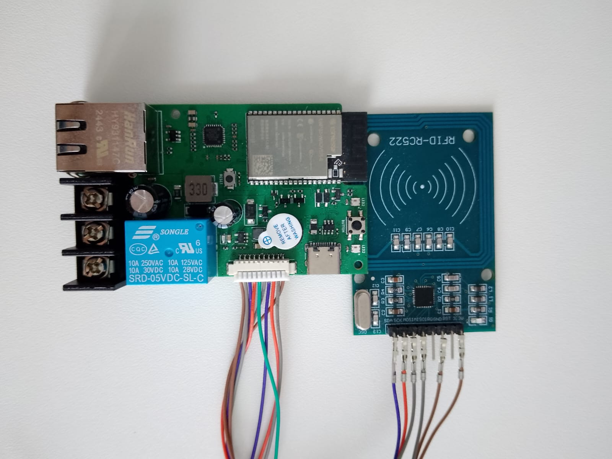

High-Performance and Low-Latency C++ Firmware
This article outlines the challenges and lessons learned while developing a real-time RFID scanning device, the Aqua Scanner, used for water access control in communal households. It focuses on system design decisions, firmware architecture, and how to build for reliability in resource-constrained environments.
The Device
What is the Aqua Scanner?
The Aqua Scanner is a low-latency embedded device that enables water flow using RFID authentication. Users scan a tag on the device, and if the tag is authorized, the scanner opens a solenoid valve via a relay, allowing water to flow.
The device is deployed in low-income communal households in South Africa, where water conservation and fair access are both critical. The system helps prevent abuse, ensures accountability, and reduces water wastage by approximately 20%.
Lesson 1: Keep It a Simple Monolith
The initial design split the system into two separate devices:
- An RFID scanner that authenticated users
- A relay controller that opened or closed the valve, communicating with the scanner over MQTT
This introduced fragility. If either device disconnected or failed (e.g., the relay controller lost power), the system became unusable—even if the scanner was functioning. Users would be denied access to water due to a communication breakdown.
Solution: Merge the scanner and relay into a single holistic unit, ensuring local fallback logic in the event of a failure. This dramatically improved reliability in the field.
Lesson 2: Internet Connections Are Unreliable
In many third-world contexts, such as South Africa where this product is deployed, internet connectivity is spotty at best. When designing firmware for such environments, assume the device is offline by default. The server should be treated as an optimization, not a dependency.
The system must cache as much information as possible locally. For the Aqua Scanner, this means caching the list of authorized RFID tags. When the device connects to the server, it downloads an updated tag list and saves it to flash storage.
I use an ESP32 module with 16MB flash to comfortably store the cached data.
Example: Receiving and Updating Tags
void as_on_received_tag_entries_from_server(void* new_tags, int new_tags_count) {
std::lock_guard<std::mutex> lock(tag_mutex);
ESP_LOGI(TAG, "Received tag entries from server: %d", new_tags_count);
TagEntry* new_tag_entry = (TagEntry*)new_tags;
uint64_t new_check_sum = calculate_tags_check_sum(new_tag_entry, new_tags_count);
log_tags(new_tag_entry, new_tags_count);
uint64_t current_check_sum = as_current_tags_check_sum();
if (new_check_sum == current_check_sum) {
ESP_LOGI(TAG, "Check sum match, not doing anything server %lld, current %lld",
new_check_sum, current_check_sum);
return;
}
ESP_LOGI(TAG, "Check sum mismatch, updating tag entries server %lld, current %lld",
new_check_sum, current_check_sum);
tag_entries.clear();
for (int i = 0; i < new_tags_count; i++) {
tag_entries.push_back(new_tag_entry[i]);
}
as_save_tag_entries_to_storage();
// Confirm to the server that we updated our cache
current_check_sum = as_current_tags_check_sum();
as_retrieve_tag_entries_from_server(current_check_sum);
}The checksum logic avoids unnecessary writes and bandwidth usage. Tag scans that occur while offline are stored with a timestamp and uploaded once the device reconnects—ensuring complete accountability.
Lesson 3: Make It Real-Time
Since network requests can be delayed or dropped entirely, I rely on local validation. When a tag is scanned:
- The device checks the local cache
- In parallel, it sends the scan to the server
If the tag exists locally, the device immediately opens the valve, allowing water to flow with minimal delay. When the server responds, the device reconciles any discrepancies (e.g., expired tags or new restrictions).
This hybrid approach gives users a responsive experience while preserving centralized control.
Design Considerations
The Aqua Scanner firmware is built on FreeRTOS and takes advantage of the ESP32's dual-core architecture. Key principles in the design include:
- Concurrency and Thread Safety: Shared data such as tag caches and scan
buffers are protected with
std::mutexto prevent race conditions between tasks. - Persistent Storage: RFID tag data and offline scans are stored in flash memory using efficient serialization. I avoid unnecessary writes to preserve flash lifespan.
- Watchdog-Driven Stability: Tasks are isolated with timeouts and fail-safes. If any critical thread hangs, the device will reset to recover automatically.
- Modular Logging: A consistent logging interface across tasks simplifies debugging and makes remote telemetry more actionable.
- Power Awareness: In off-grid or battery-backed deployments, future improvements could include low-power sleep modes and more aggressive connection throttling.
- OTA Update Readiness: The device can support OTA (Over-the-Air) updates. This ensures that firmware fixes or new features can be rolled out without physical access.
Conclusion
Building devices for low-resource, high-risk environments comes with unique challenges. The Aqua Scanner taught me that simplicity, resilience, and local autonomy are paramount. By unifying the design, leaning on local caching, and handling real-world conditions gracefully, I created a system that's not just technically effective—but practically deployable at scale.
The key lessons from this project can be applied to any embedded system operating in challenging environments:
- Design for failure: Assume components will fail and build redundancy
- Cache aggressively: Store critical data locally to handle network outages
- Optimize for user experience: Real-time response is important
- Test in real conditions: Lab testing doesn't reveal field deployment challenges
- Keep it simple: Complex systems fail more often in harsh environments